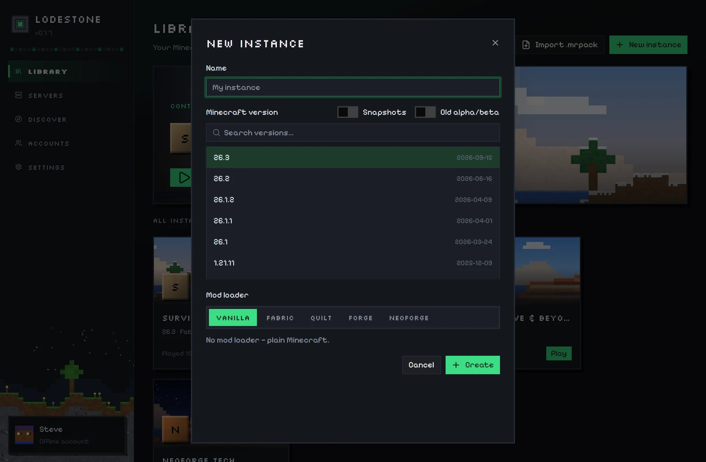
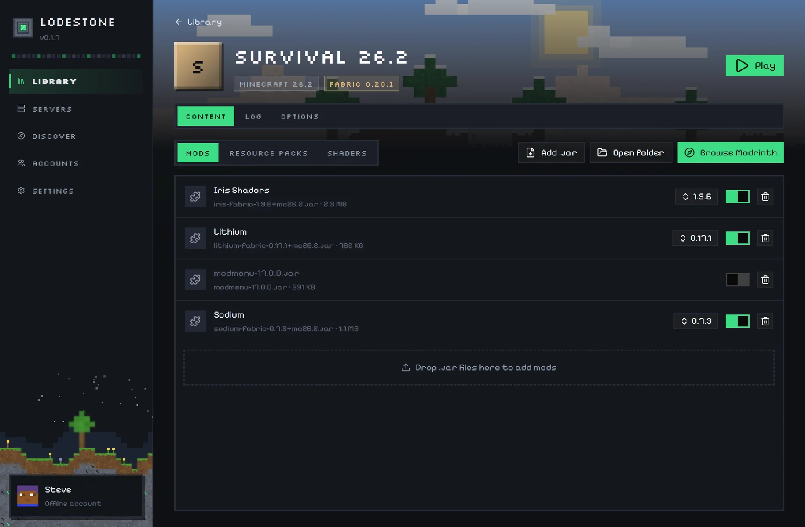
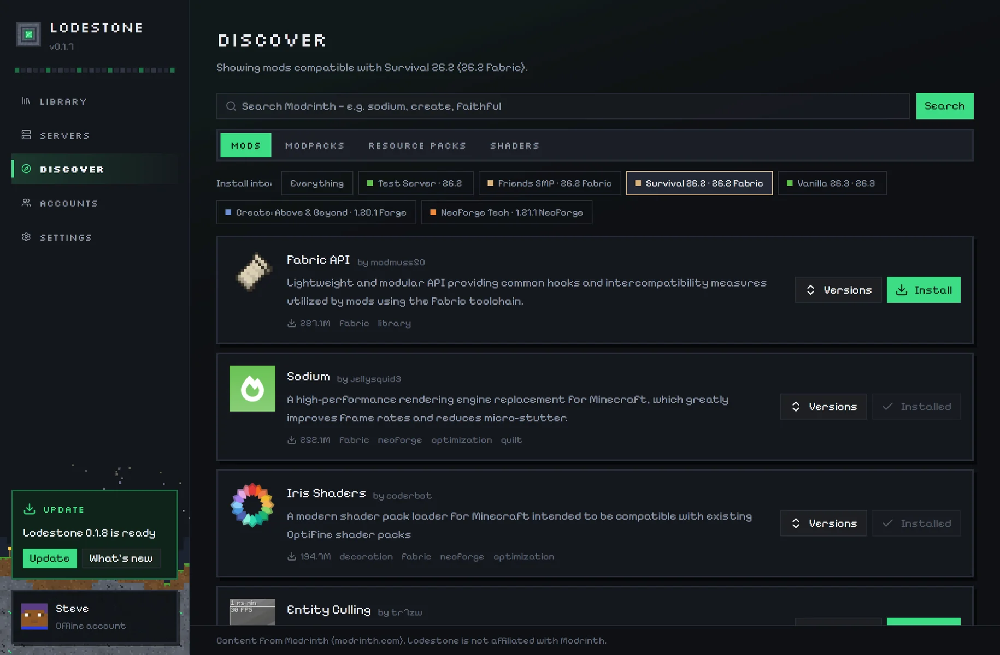
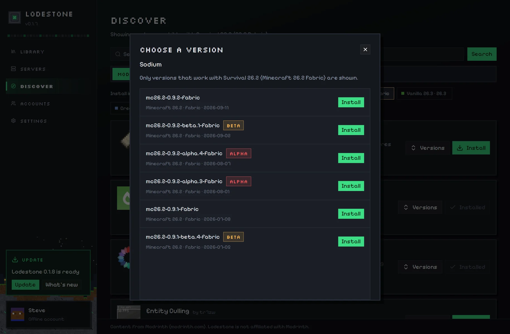
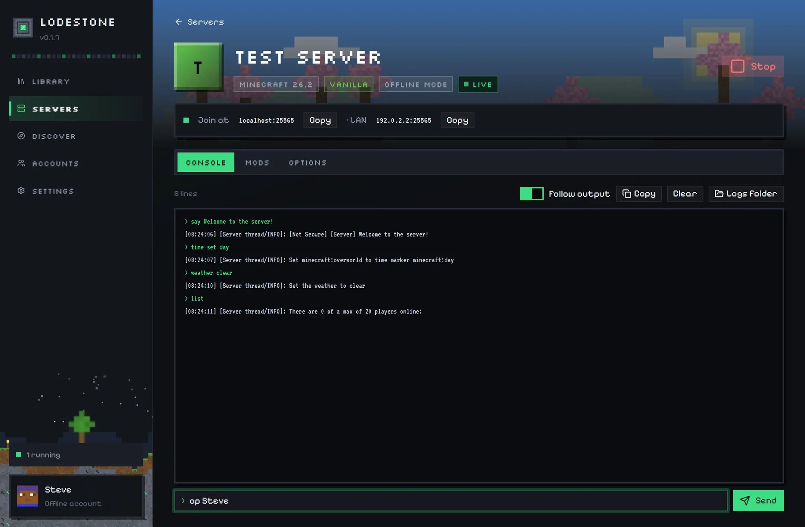

How to use Lodestone: instances, mods, modpacks, servers, settings and where your files live.
Getting started
Lodestone keeps everything in instances. Each instance is one Minecraft version with one mod loader, and its own mods, worlds and settings. Servers work the same way and have their own page.
Add an account
Open Accounts and type a username. That's your offline account.
Create an instance
In Library, click New instance, pick a Minecraft version and a mod loader, then click Create.
Press Play
The first launch downloads the game files and the right Java runtime. Later launches start straight away.
New to Lodestone? Install it first with the Install guide.
Accounts
Lodestone uses offline accounts: a username with no password and no Microsoft sign-in.
Usernames are 3–16 characters: letters, numbers and underscores.
Add as many as you like on the Accounts page and pick which one plays. The current account shows at the bottom of the sidebar.
Offline accounts work in singleplayer, on LAN, and on servers with online mode turned off, such as the ones you host with Lodestone. Servers that check Microsoft accounts won't let them join.
Instances

Creating an instance
Name: anything you like. Leave it empty and Lodestone names it after the version and loader.
Minecraft version: releases are listed by default. Turn on Snapshots or Old alpha/beta to see more; you can make that the default in Settings.
Mod loader: Vanilla, Fabric, Quilt, Forge or NeoForge. For a loader, pick its version; the newest is selected for you.
You can also make an instance from a modpack. See Modpacks.
The instance page
Click an instance to open it. The header shows its version and loader, and the Play button. Below are three tabs:
Log: the game's output while it runs. Check it first when something goes wrong.
Options: name, memory and JVM arguments, the modpack version, the icon, and management tools.
Options
Memory (MB) and Extra JVM arguments override the defaults from Settings for this instance only. Leave them empty to use the defaults.
Icon: click Change icon… (or the icon in the header) and choose a PNG, JPG, WebP or GIF. Square images look best. Reset goes back to the default.
Open instance folder shows its files. Reinstall loader sets it up again on the next launch, which fixes most broken installs.
Delete asks you to click twice and removes the instance with its worlds. This can't be undone.
Mods, resource packs & shaders

Add files: click Add .jar (or Add .zip for packs), or drag files onto the list.
Turn off a mod with its switch instead of deleting it. Lodestone renames it to .disabled, so the game skips it.
Change version: content from Modrinth shows its version. Click it to choose another version; only ones that work with this instance are listed.
Browse Modrinth opens Discover, already filtered to this instance.
Vanilla instances can't load mods, but resource packs and shaders still work. Shaders need a shader loader such as Iris on Fabric.
Discover (Modrinth)

Search mods, modpacks, resource packs and shaders from Modrinth.
Pick an instance under Install into. Results then show only content that works with its Minecraft version and loader, and Install adds the newest compatible version.
Required dependencies, like Fabric API, install automatically.
Things already in the instance show Installed, including mods you added by hand or that came with a modpack.
Versions lets you pick a specific version. For mods it lists only versions that fit the instance; for modpacks it lists them all.

Modpacks
Installing a modpack always creates a new instance. Your existing instances are never changed.
Install from Discover → Modpacks, or click Import .mrpack in the Library for a file you downloaded. Modrinth packs use their own icon.
To make a server from a modpack, pick a server under Filter by in Discover and click Install as server, or use Import .mrpack on the Servers page. Client-only mods are left out.
Changing a modpack's version
Open the instance's Options tab and click Change version… in the Modpack card. Lodestone swaps the pack's files in place:
Your worlds, options.txt, server list and server settings are kept.
Mods the old version had and the new one doesn't are removed. Pack mods you turned off stay off.
If the Minecraft version changes, mods you added yourself move to a compatible version, or are turned off if none exists. Lodestone tells you which.
Servers

Creating a server
On Servers, click New server, choose a version and loader, and accept the Minecraft EULA. Servers can't start until the EULA is accepted.
Running it
Start server and Stop are in the header. A LIVE badge shows while it runs, and the sidebar counts running servers.
The Console shows the server log. Type commands like say hello, op Steve or time set day and press Enter. Leave out the slash.
The Join at bar shows localhost:25565 for this computer and a LAN address for other devices on your network.
Options
Port (25565 by default), Max players and Message of the day.
Online mode requires real Microsoft accounts. Keep it off so offline players can join.
Mods: modded servers use the Mods tab like instances do. Players need the same mods.
Letting friends join
On the same Wi-Fi or network, friends use the LAN address. To join from elsewhere, forward the server's TCP port (25565) on your router to this computer, or use a tunnel service, and share your public address.
Settings
Java & memory: maximum and minimum memory for every instance (Lodestone suggests a value from your RAM; 4096–8192 MB suits most modpacks), an optional Java executable (leave it empty to use Mojang's runtime for each version), and extra JVM arguments.
Game window: the width and height the game opens at.
Versions: show snapshots and old alpha/beta versions when creating instances.
Updates: check now, install, and choose whether to check when Lodestone starts.
Storage: open the data folder. Versions, libraries, assets and Java runtimes are shared by all instances, so each is downloaded once.
Updates
Lodestone checks GitHub for a new release when it starts. When one is out, an Update card appears at the bottom of the sidebar: click Update and Lodestone downloads it, replaces itself and reopens. What's new opens the release notes.
Updates never touch your instances, worlds, accounts or settings, because they live in the data folder, not next to the app.
Files & folders
Windows
%APPDATA%\p1e2r\Lodestone\data
macOS
~/Library/Application Support/dev.p1e2r.Lodestone
Linux
~/.local/share/lodestone
Inside the data folder:
instances/: one folder per instance and server. Each has instance.json and its game folder: minecraft/ for instances (with mods, saves, resourcepacks, shaderpacks) or server/ for servers.
versions/, runtime/ and cache/: game files, Java runtimes and downloads shared by all instances.
accounts.json and settings.
To back up a world, copy its folder from instances/<name>/minecraft/saves/ while the game is closed.
Command line
For testing and scripts, Lodestone has a small command-line mode:
lodestone --cli install 26.2 fabric 0.20.1
--cli install <version> [loader <loader-version>]: download everything a version needs.
--cli loaders <loader> <version>: list loader versions.
--cli server <name> <version> [loader <loader-version>]: create a server.
Loaders are fabric, quilt, forge and neoforge. On macOS the program is /Applications/Lodestone.app/Contents/MacOS/lodestone.
Troubleshooting
The game crashes on start
Open the Log tab. Crashes after adding mods usually come from one mod: turn the newest ones off and try again. Make sure every mod is for the same loader and Minecraft version.
“… has no version for Minecraft …”
That mod hasn't been released for your instance's Minecraft version or loader yet. Pick another mod, or make an instance with a version the mod supports.
The game runs out of memory or stutters
Raise Memory in the instance's Options tab (or in Settings for every instance). 4096–8192 MB suits most modpacks. Don't give it more than half your RAM.
The instance won't install or launch after an error
Use Reinstall loader in the instance's Options tab, then press Play.
Friends can't join my server
Check online mode is off for offline accounts, that they use the LAN address on the same network, and that the port is forwarded for players outside it.